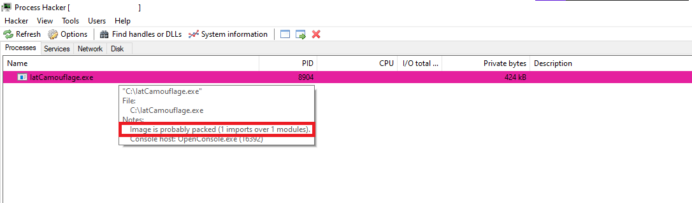
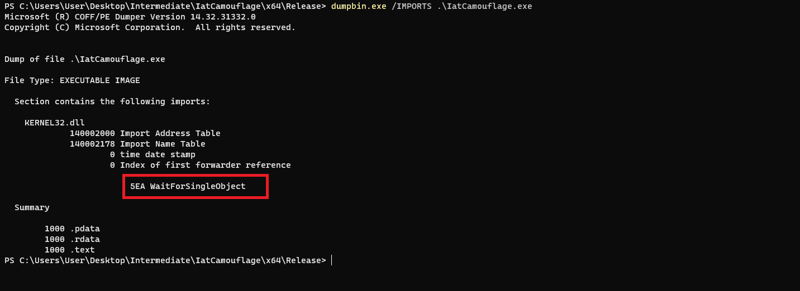
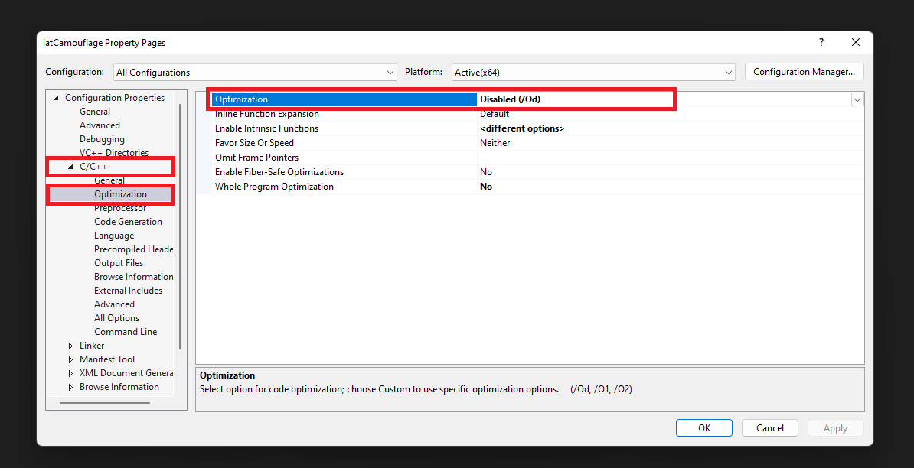
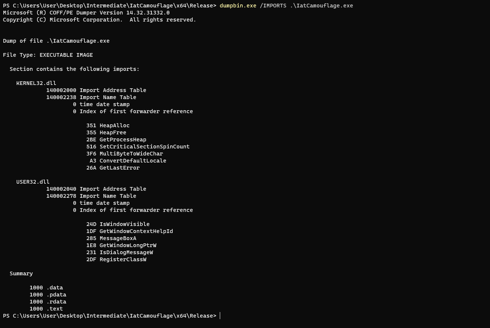

Introduction
By removing the C Runtime Library from the final binary file, the IAT is cleared of any unused WinAPI functions. However, this may raise suspicion if the binary file imports very few WinAPI functions, particularly when combined with API hashing which can even result in zero imported functions.
As a malware developer, it is important to make the malware implementation appear normal. Having an implementation with a fake IAT is more effective than having no imported functions. This module will discuss this concept in detail.
Let's start with a binary called IatCamouflage.exe that does not use the CRT library and was compiled similarly to that demonstrated in the previous module.
#include <Windows.h>int main() {
// infinite wait
WaitForSingleObject((HANDLE)-1, INFINITE);
return 0;
}When the binary is executed, Process Hacker will highlight the process with a pinkish color and display a note when the mouse hovers over the process. Process hacker assumes the binary is packed due to the lack of imports in the IAT.

Verify that IatCamouflage.exe is importing one function using dumpbin.exe.

Manipulating The IAT
Manipulating the IAT can be easily done by using benign WinAPIs that do not change the behavior of the program. This can be done by calling the WinAPIs with NULL parameters or using the WinAPIs on dummy data that will not affect the program. Additionally, these functions can be placed in if-statements that will never execute however some compilers can modify the flow of the code using Dead-code elimination. This is a compiler optimization setting to remove code that does not affect the program.
Dead-Code Elimination Example
The following code snippet calls several WinAPIs inside an if-statement which can never be satisfied.
int z = 4;
// Impossible if-statement that will never run
if (z > 5) {
// Random benign WinAPIs
unsigned __int64 i = MessageBoxA(NULL, NULL, NULL, NULL);
i = GetLastError();
i = SetCriticalSectionSpinCount(NULL, NULL);
i = GetWindowContextHelpId(NULL);
i = GetWindowLongPtrW(NULL, NULL);
i = RegisterClassW(NULL);
i = IsWindowVisible(NULL);
i = ConvertDefaultLocale(NULL);
i = MultiByteToWideChar(NULL, NULL, NULL, NULL, NULL, NULL);
i = IsDialogMessageW(NULL, NULL);
}If the Visual Studio project does not have the CRT Library dependency and compiles the code above, then the WinAPIs will not be visible in the binary's IAT. The compiler is aware that the if-statement is impossible to satisfy and therefore the entirety of the if-statement logic is not included in the compiled binary resulting in the WinAPIs not being in the binary's IAT. There are two ways to resolve this problem:
Disabling code optimization
This method is easy and simply requires Visual Studio's Optimization option to be disabled as shown in the image below. This will disable the dead-code elimination compiler optimization property resulting in the WinAPIs being visible in the IAT. However, disabling optimization on larger programs can negatively impact performance since the compiler is no longer improving the efficiency and speed of the code. Therefore the program may consume more memory or operate slower.

Tricking The Compiler
This method requires the use of logic to trick the compiler into believing that the if-statement may be valid. The code snippet below uses logic that makes it difficult for the compiler to know whether the if-statement will execute thus forcing it to include the logic in the compiled binary even though the if-statement will never be satisfied.
Below are a few points about the code snippet to make it easier to understand.
RandomCompileTimeSeed function is used to generate a random compile-time seed via the __TIME__ macro.Helper function allocates a heap buffer and sets the first 4 bytes to RandomCompileTimeSeed() % 0xFF, which limits the seed value to be less than 0xFF (in hex) or 255 (in decimal).IatCamouflage function contains the variable A which is an integer pointer and is set to be equal to the first four bytes of the buffer returned by the Helper function.if (*A > 350), will always be false. The catch here is that the compiler does not know this and will therefore include this logic in the compiled binary.// Generate a random compile-time seed
int RandomCompileTimeSeed(void)
{
return '0' * -40271
__TIME__[7] * 1
__TIME__[6] * 10
__TIME__[4] * 60
__TIME__[3] * 600
__TIME__[1] * 3600
__TIME__[0] * 36000;
}
// A dummy function that makes the if-statement in 'IatCamouflage' interesting
PVOID Helper(PVOID *ppAddress) {
PVOID pAddress = HeapAlloc(GetProcessHeap(), HEAP_ZERO_MEMORY, 0xFF);
if (!pAddress)
return NULL;
// setting the first 4 bytes in pAddress to be equal to a random number (less than 255)
*(int*)pAddress = RandomCompileTimeSeed() % 0xFF;
// saving the base address by pointer, and returning it
*ppAddress = pAddress;
return pAddress;
}
// Function that imports WinAPIs but never uses them
VOID IatCamouflage() {
PVOID pAddress = NULL;
int* A = (int*)Helper(&pAddress);
// Impossible if-statement that will never run
if (*A > 350) {
// some random whitelisted WinAPIs
unsigned __int64 i = MessageBoxA(NULL, NULL, NULL, NULL);
i = GetLastError();
i = SetCriticalSectionSpinCount(NULL, NULL);
i = GetWindowContextHelpId(NULL);
i = GetWindowLongPtrW(NULL, NULL);
i = RegisterClassW(NULL);
i = IsWindowVisible(NULL);
i = ConvertDefaultLocale(NULL);
i = MultiByteToWideChar(NULL, NULL, NULL, NULL, NULL, NULL);
i = IsDialogMessageW(NULL, NULL);
}
// Freeing the buffer allocated in 'Helper'
HeapFree(GetProcessHeap(), 0, pAddress);
}Results
Compile the code snippet above and check the IAT of the binary. As expected, the benign WinAPIs inside the if-statement are now visible.

These imported functions are enough to make the binary appear benign when statically analyzed. On the other hand, the malicious WinAPIs should be removed from the IAT by using API Hashing.